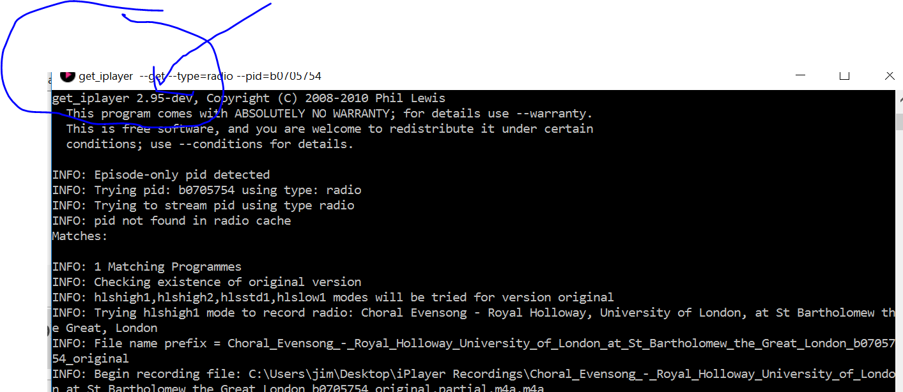
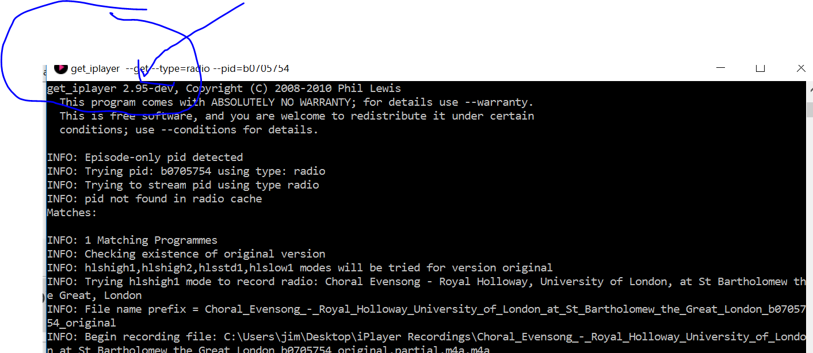

15-02-2016, 02:53 PM
user-2
15-02-2016, 03:55 PM
(15-02-2016, 11:46 AM)I'm sure the change this time is something to do with the launch of the BBC Store.The problem was unrelated to the BBC Store.
(15-02-2016, 11:50 AM)I'm keeping 2.95 for now. TV shows download much much faster. I can't believe the difference....The dev version uses HLS as the default streaming format. It won't necessarily be faster, but it can be.
(15-02-2016, 02:53 PM)Updating the cache is really slowThat is expected, especially for indexing of radio programmes. Cache updating has changed.
user-1186
15-02-2016, 04:12 PM
Hi there. Windows user here. Get-Iplayer looked broken last night so like any sensible user I googled "get_iplayer broke" and found this thread. Although I have some linux experience I don't pretend to understand most of what was said, but when the thread got to page 3 and "seems to be fixed", followed by "Solved" added to the thread title, I tried another test, only to find nothing had changed.
However I then did a complete uninstall, including all preferences and user settings, and reinstalled from the old "latest" exe still sitting in my downloads.
All working again now. Can someone explain to a poor noob exactly what has been fixed (BBC put their data feed back?) and why a complete reinstall resolved it for me?
However I then did a complete uninstall, including all preferences and user settings, and reinstalled from the old "latest" exe still sitting in my downloads.
All working again now. Can someone explain to a poor noob exactly what has been fixed (BBC put their data feed back?) and why a complete reinstall resolved it for me?
user-585
15-02-2016, 05:34 PM
(15-02-2016, 04:12 PM)Can someone explain to a poor noob exactly what has been fixed (BBC put their data feed back?)Some of the resources get_iplayer uses to get download and schedule information were blocked yesterday which meant that when get_iplayer either tried to refresh the programme cache or download any programme, it couldn't get the data it needs resulting in the errors we saw.
Today they have restored these resources (at least for the time being) so get_iplayer now works again.
Quote:and why a complete reinstall resolved it for me?Not sure of the answer to that one.
user-730
16-02-2016, 01:12 AM
(15-02-2016, 04:12 PM)... why a complete reinstall resolved it for me?Coincidence? Possibly the missing resources were restored while you were pondering and re-installing GiP.
user-1209
16-02-2016, 06:12 AM
I have been using iPlayer, very gratefully, since 2011. I panicked 48 hours ago when suddenly nothing worked. But due to this forum I was able to get up and running again. Thanks everyone.
I also copied the 2.95 files and am amazed by the difference. First, the download speed is incredible. I have a 100Mbps asynchronous connection which is normally a measured 94Mbps down and 94Mbps up. It would previously take 10-15 minutes to download a 1-hour show in HD (approx 1GB). Now it takes just 2mins. Incredible.
One puzzle, I think has been mentioned before. As I said, I am after HD, so I am downloading with --modes=best. After download is complete, during the conversion from an mp4 transport stream to mp4, I am getting a red error message "non-existing SPS 0 referenced in buffering period". However the resulting files seem perfect. What does the error warning message mean? Any comments on this?
I also copied the 2.95 files and am amazed by the difference. First, the download speed is incredible. I have a 100Mbps asynchronous connection which is normally a measured 94Mbps down and 94Mbps up. It would previously take 10-15 minutes to download a 1-hour show in HD (approx 1GB). Now it takes just 2mins. Incredible.
One puzzle, I think has been mentioned before. As I said, I am after HD, so I am downloading with --modes=best. After download is complete, during the conversion from an mp4 transport stream to mp4, I am getting a red error message "non-existing SPS 0 referenced in buffering period". However the resulting files seem perfect. What does the error warning message mean? Any comments on this?
user-1162
16-02-2016, 10:59 AM
@spurfilm, I noticed that error with 2.95 as well but it doesn't seem to be affecting the final mp4 (I use mode=best also). It was reported as an FYI by errfmt back on the 12th January in Windows Forums › Windows Troubleshooting. Checking the Google and it seems to be a common streaming error across a range of devices and apps. A fatal but fixable error with some apps depending on the commands used. However, I have yet to see an actual explanation of the fault or what causes it and I can't be bothered to go looking through various streaming specs to find what could be the cause, at least as long as it has no actual effect on the output mp4.
user-1209
16-02-2016, 11:05 AM
Quote:I noticed that error with 2.95 as well but it doesn't seem to be affecting the final mp4....
OK, that's reassuring. Many thanks.
user-1202
17-02-2016, 06:50 PM
Hi there.
I notice on V2.94 (old) that I can't download radio --tried BBC 3 Choral evensong --pid=b0705754 --type=radio (Wed feb 17 approx. 18.00 UK time).
Worked fine on V2.95 (development)
Tried to get program at UK time around 18.00 when it was available on standard BBC Iplayer radio
Got two computers - one with old version, other with new -- both running W10 pro x-64. Latest W10 updates applied.

update -- at 18.20 UK time seems the old V2.94 is now working again -- not sure what the Beeb are doing currently !!!!.
Cheers
I notice on V2.94 (old) that I can't download radio --tried BBC 3 Choral evensong --pid=b0705754 --type=radio (Wed feb 17 approx. 18.00 UK time).
Worked fine on V2.95 (development)
Tried to get program at UK time around 18.00 when it was available on standard BBC Iplayer radio
Got two computers - one with old version, other with new -- both running W10 pro x-64. Latest W10 updates applied.

{kind=link}
update -- at 18.20 UK time seems the old V2.94 is now working again -- not sure what the Beeb are doing currently !!!!.
Cheers
user-926
17-02-2016, 07:07 PM
I just tried - it all works for me on 2.94
Alan
Alan
user-1202
17-02-2016, 07:16 PM
Hi there
V2.94 now working -- seems I might have just got in when BBC were making program available on Iplayer --probably best to wait for a couple of hours after scheduled broadcast time.
Cheers
V2.94 now working -- seems I might have just got in when BBC were making program available on Iplayer --probably best to wait for a couple of hours after scheduled broadcast time.
Cheers
user-21
17-02-2016, 07:35 PM
just a quick question, is this version 2.95 available for windows?
user-2
17-02-2016, 07:48 PM
New issues should go to new threads. This thread is closed.